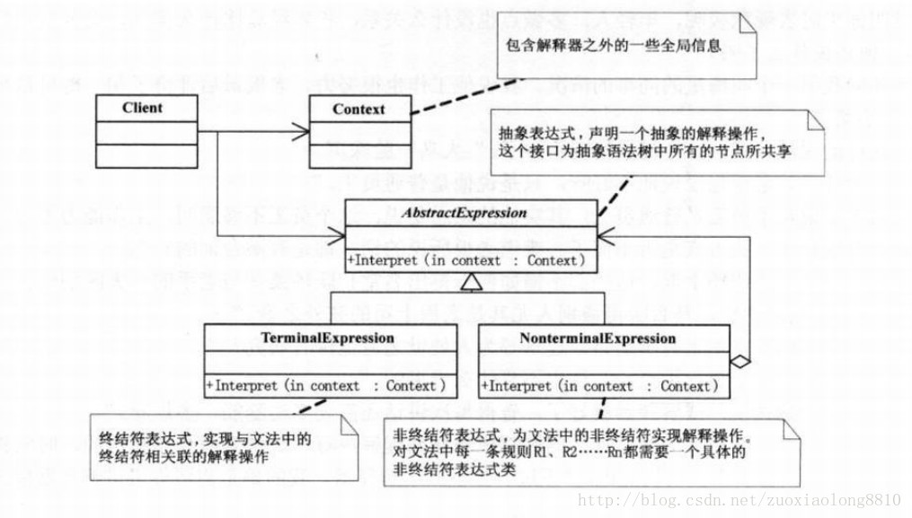
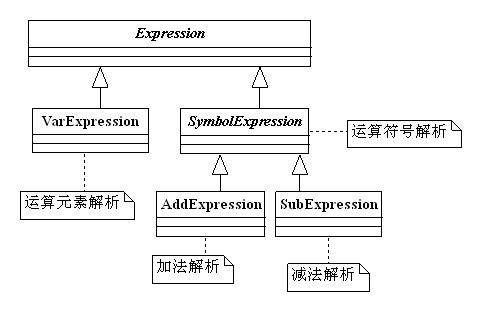

我们平常写的程序，计算机是如何理解的。简单的例子
int one = 10;
int two = 20;
int tree = 30;
int express = one + two * tree;
编译器是如何理解这个表达式，又是如何将其计算出来的呢。
我们肯定会认为这是理所当然的，但其实是编译器背后做了解析给定一种语言，定义他的文法的一种表示，并定义一个解释器，
该解释器使用该表示来解释语言中句子。
换句话说就是我们可以自己创造自己的编程语言了
而计算机在编译程序的过程中，就是运用的这种模式的思路
如果想详细了解，可以看看编译原理相关那么什么是文法 文法也称为语法，指的是语言的结构方式。包括词的构成和变化，词组和句子的组织。对于文法来说，我们可以简单的理解为一种语言的规则，那么从解释器模式的定义可以看出，首先我们要先设计一种语言，然后给出语言的文法的表示，而在此基础上，我们采用解释器模式去解释语言中的句子。

（1）抽象表达式(Expression)角色：声明一个所有的具体表达式角色都需要实现的抽象接口。这个接口主要是一个interpret()方法，称做解释操作。
（2）终结符表达式(Terminal Expression)角色：实现了抽象表达式角色所要求的接口，主要是一个interpret()方法；文法中的每一个终结符都有一个具体终结表达式与之相对应。比如有一个简单的公式R=R1+R2，在里面R1和R2就是终结符，对应的解析R1和R2的解释器就是终结符表达式。
（3）非终结符表达式(Nonterminal Expression)角色：文法中的每一条规则都需要一个具体的非终结符表达式，非终结符表达式一般是文法中的运算符或者其他关键字，比如公式R=R1+R2中，“+"就是非终结符，解析“+”的解释器就是一个非终结符表达式。
（4）环境(Context)角色：这个角色的任务一般是用来存放文法中各个终结符所对应的具体值，比如R=R1+R2，我们给R1赋值100，给R2赋值200。这些信息需要存放到环境角色中，很多情况下我们使用Map来充当环境角色就足够了。
在这里我们实现一个最简单的加法减法的公式计算。
类结构图如下

1.其实是利用函数递归调用，很巧妙的遍历数结构 从左到向分析表达式（如:x-z+w)，最终的语法树如下：
+
/ \
- w
/ \
x z2.逆波兰表示法(学过)（也称为后缀表达式）
举例:
正常表达式：
x - z + w
逆波兰表示:
w x z - +
优势
它的优势在于只用两种简单操作，入栈和出栈就可以搞定任何普通表达式的运算。
其运算方式如下：
如果当前字符为变量或者为数字，则压栈，如果是运算符，则将栈顶两个元素弹出作相应运算，
结果再入栈，最后当表达式扫描完后，栈里的就是结果。解释器模式在实际的系统开发中使用的非常少，因为它会引起效率、性能以及维护等问题，一般在大中型的框架型项目能够找到它的身影，比如一些数据分析工具、报表设计工具、科学计算工具等等。
大部分情况，我们都可以用解释性的脚本语言代替我们手动编写解释器模式。
如果想了解程序是如何编译的，可以从这个为出发点，了解编译原理。